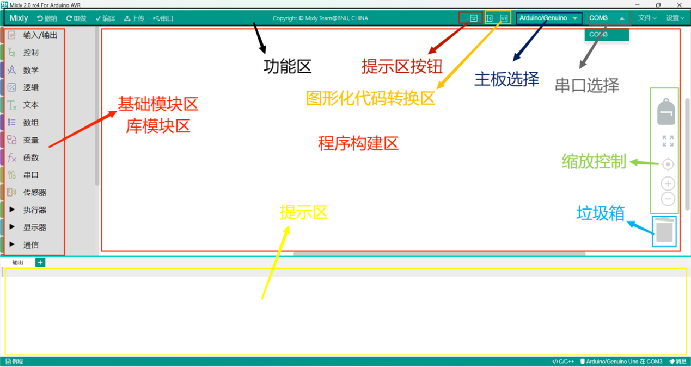
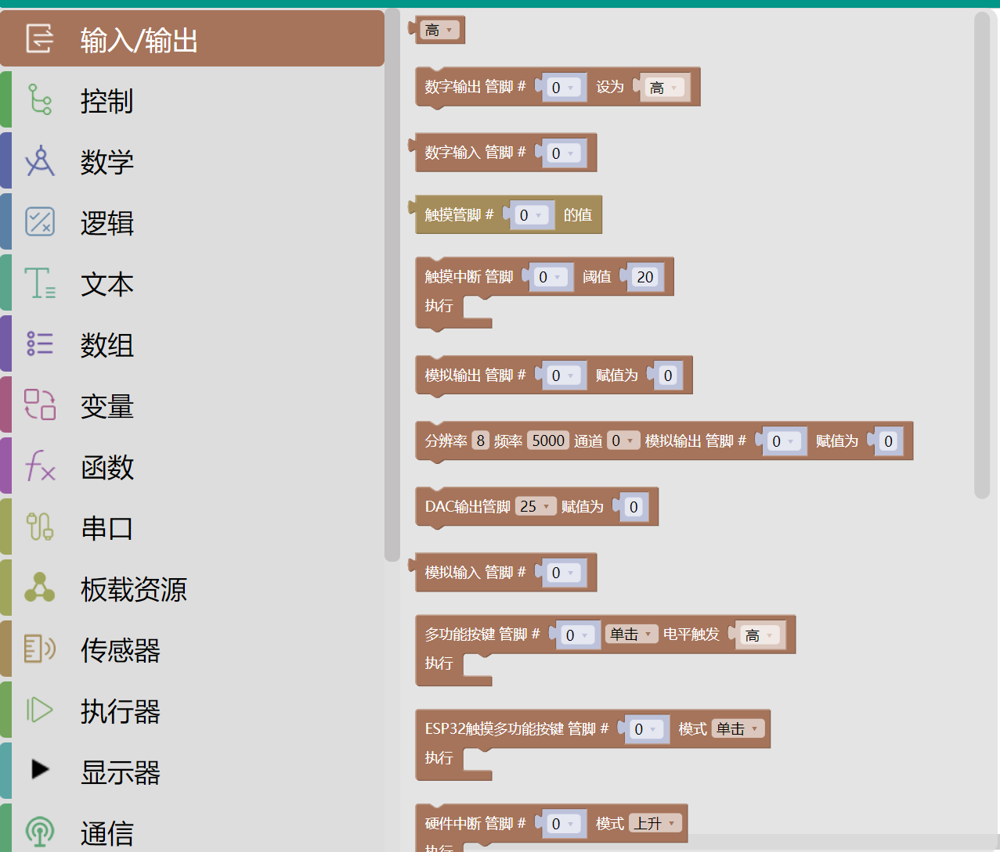
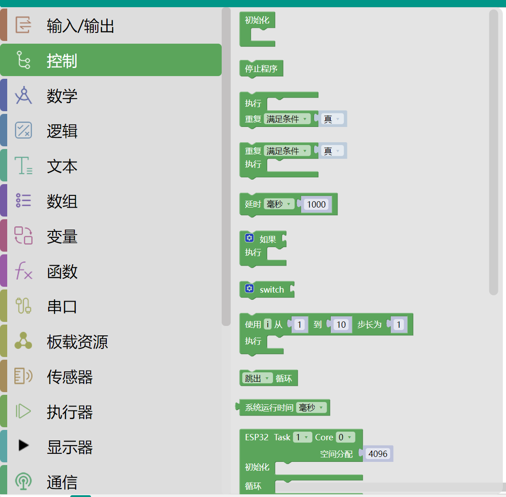
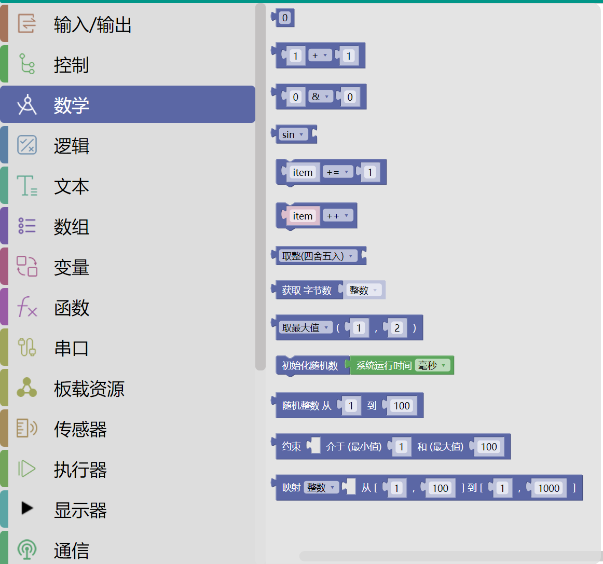
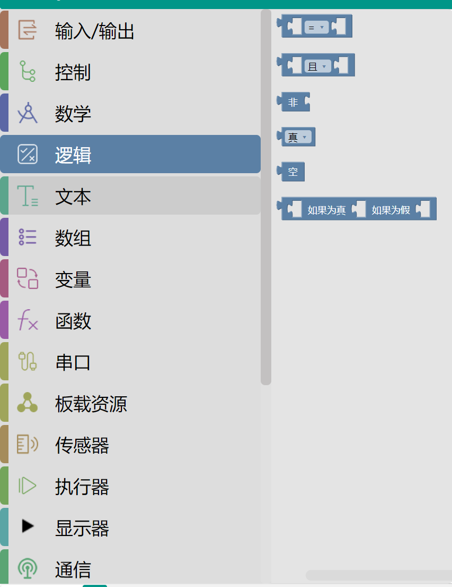
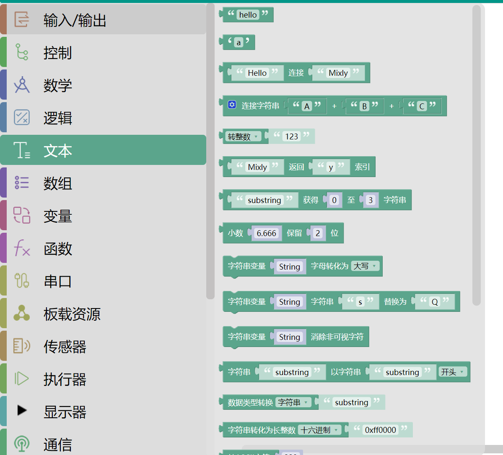
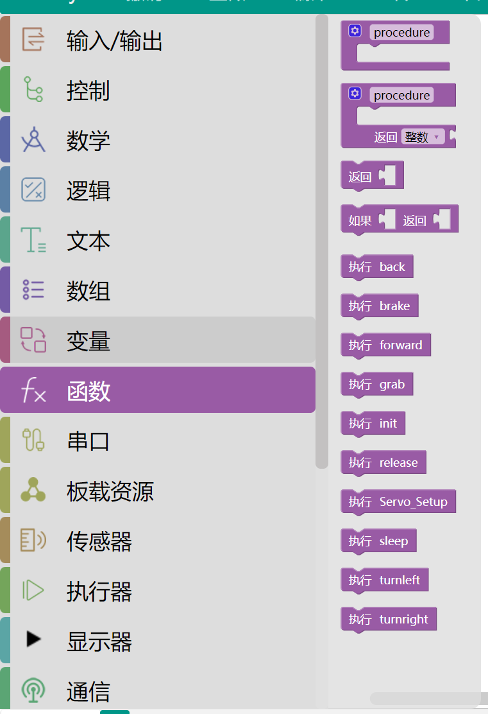
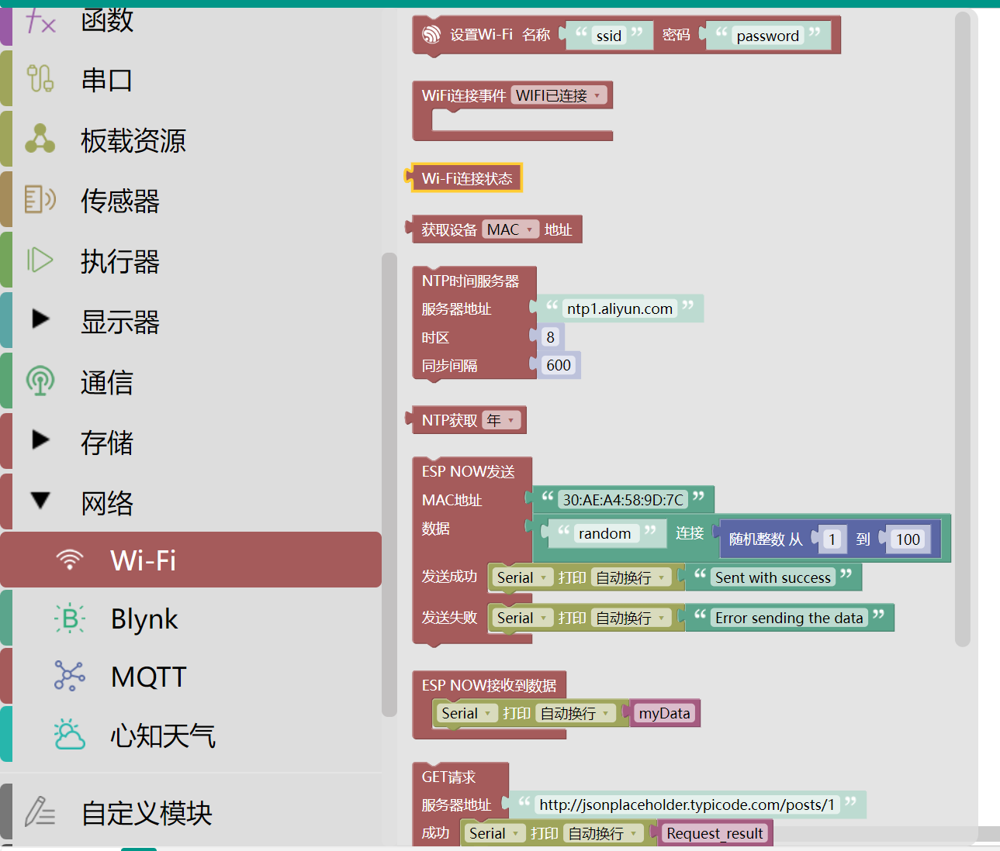
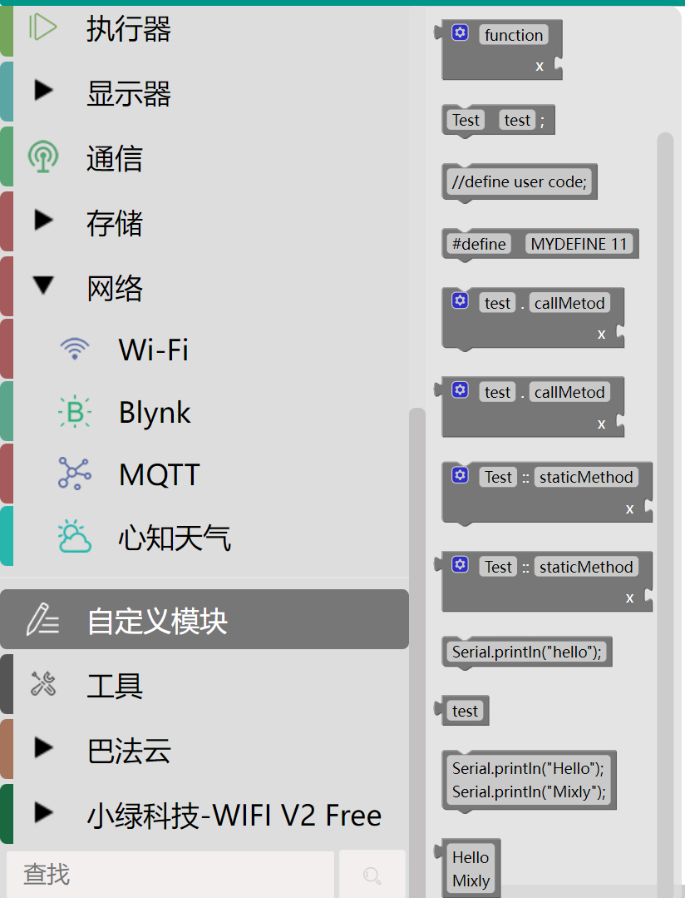

Mixly界面简单介绍
Mixly界面不同分区简要介绍

• 基础模块区和库模块区： 同种类型的积木被分在同个模块中并赋予同种颜色，每块积木代表一条控制指令。
• 功能区： 对项目文件的创建、保存，库的导入、导出、管理，串口连接与上传程序，控制板选择进行操作的区域。
• 程序构建区： 是放置从基础模块区和库模块区拖拽出来的积木块的地方。
• 代码区： 拖拽出积木后，点击“代码”，可以看到你拖拽的模块对应的C语言代码。
• 缩放控制区： 可以将软件操作界面进行缩放。
• 垃圾箱： 用来移除不需要的积木块。
基础模块区和库模块区使用方法
-
一、输入/输出：
功能：控制硬件引脚的电平状态或读取传感器数据。
1.数字输入/输出：设置引脚为高/低电平（如控制LED开关）或读取数字信号（如按钮状态）。
2.模拟输入/输出：读取模拟信号（如电位器值）或输出PWM信号（如调节LED亮度）。
3.中断控制：配置硬件中断触发条件（如上升沿、下降沿）。
4.脉冲长度：测量脉冲宽度（如超声波测距）  -
二、控制：
功能：控制程序执行流程。
1.初始化：程序启动时仅执行一次的代码块，对应Arduino的setup()函数。
2.循环：重复执行的代码块，对应loop()函数。
3.条件判断：如果、如果-否则模块，实现分支逻辑。
4.循环结构：重复、重复直到等模块，支持计数循环和条件循环  -
三、数学：
功能：数值运算与处理。
1.基础运算：加、减、乘、除、取模等。
2.高级运算：三角函数、对数、幂运算、随机数生成等。
3.数值处理：取整、约束范围（如map函数）、绝对值等  -
四、逻辑：
功能：逻辑判断与运算。
1.比较运算：大于、等于、小于等。
2.逻辑运算：与（AND）、或（OR）、非（NOT）等。
3.三元运算符：?运算模块，简化条件赋值  -
五、文本与数组：
1.文本操作： 字符串连接、截取、转换（如数字转文本）。
2.数组操作： 定义数组、存取元素、修改长度等  -
六、变量与函数：
支持整型、浮点型、布尔型等变量，以及自定义函数  -
七、网络WiFi
功能：快速实现设备接入本地Wi-Fi网络，为后续通信提供基础。
Wi-Fi网络连接管理: 配置连接参数，通过拖拽积木设置SSID和密码（设置Wi-Fi名称"ssid"密码"password"）实时监测连接状态（Wi-Fi连接事件和Wi-Fi连接状态积木）  -
八、自定义模块
功能：用户自定义代码扩展
1.自由编程接口：允许用户突破图形化积木的限制，直接编写或嵌入原生代码，实现更复杂或个性化的功能。
2.混合编程支持： 图形化积木与文本代码可混合使用（例如在图形化流程中插入Serial.print打印变量值）。
3.灵活输入输出： 支持变量传递（如将图形化积木中的变量名直接用于自定义代码块）。 